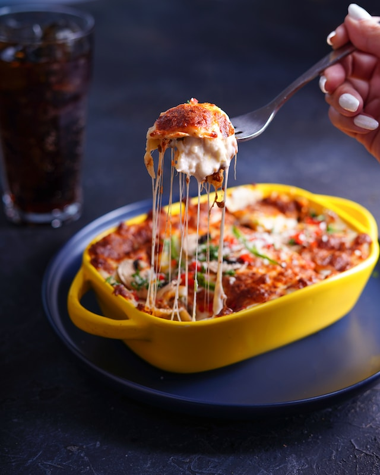

Lasagna

Ingredients
- 1 tablespoon olive oil
- 1 onion, diced
- 2 cloves garlic, minced
- 500 grams minced beef
- 800 grams canned crushed tomatoes
- 2 tablespoons tomato paste
- 1 teaspoon dried oregano
- 1 pinch salt and pepper
- 475 grams ricotta cheese
- 1 egg, beaten
- 1 handful fresh basil, chopped
- 1 pinch salt
- 9 lasagna noodles
- 225 grams mozzarella cheese, shredded
- 50 grams grated Parmesan cheese
Directions
- First, preheat your oven to 180°C. In a large skillet, heat 2 tablespoons of olive oil and add 1 diced onion
and 2 minced cloves of garlic, sautéing until the onion is translucent.
- Then add 500 grams of minced beef and cook until browned.
- Stir in 800 grams of canned crushed tomatoes, 2 tablespoons of tomato paste, 1 teaspoon of dried oregano, and
a pinch of salt and pepper.
- Let this simmer for 20 minutes. In another bowl, combine:
- 475 grams of ricotta cheese
- 1 beaten egg
- a handful of chopped fresh basil
- and a pinch of salt.
- For the lasagna assembly, spread a spoonful of the meat sauce in a baking dish, then layer:
- 3 lasagna sheets
- half of the remaining meat sauce
- another 3 lasagna sheets
- all the ricotta mixture
- another 3 lasagna sheets
- the rest of the meat sauce
- and finally sprinkle 200 grams of grated mozzarella cheese on top
- Cover with aluminium foil and bake for 25 minutes.
- After this, remove the foil and bake for another 25 minutes until the cheese is golden and bubbly. Let
the lasagna rest for 15 minutes before serving.